Silicon separates profile shape from conductivity convergence.
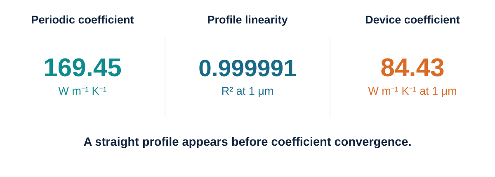
A straight temperature profile can appear before the bulk coefficient governs transport.
One experiment fixes end temperatures; the other resolves a spatial modulation.
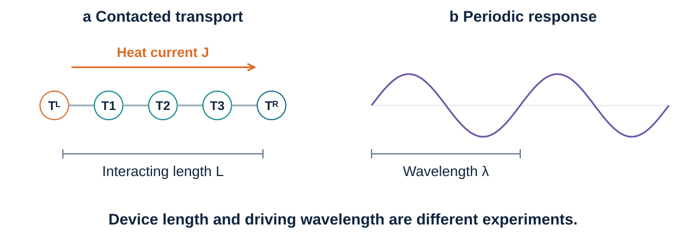
Do not identify a wavelength-response scale with a device crossover length.
A local thermal source can exchange energy over many cells.
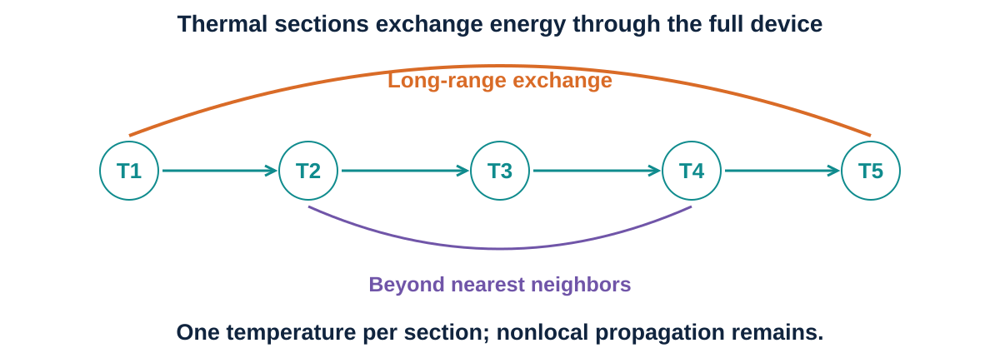
Source locality does not make transport nearest-neighbor.
The periodic coefficient can be calculated without fitting a length curve.
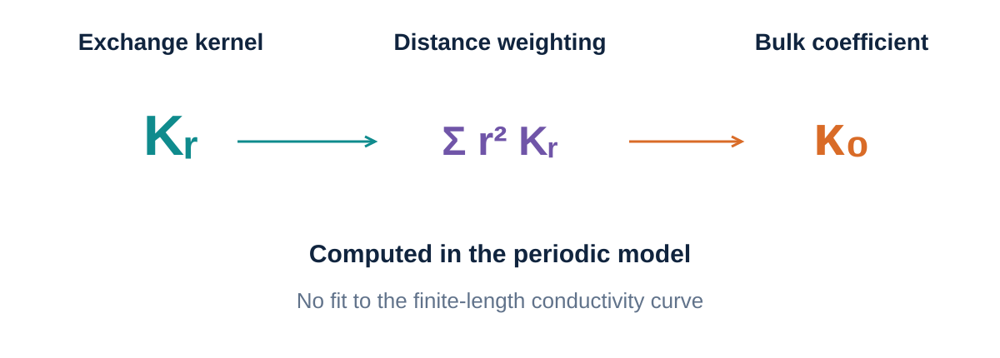
A finite second moment gives a finite periodic Fourier coefficient.
Distant exchange matters more strongly for locality than for the bulk coefficient.
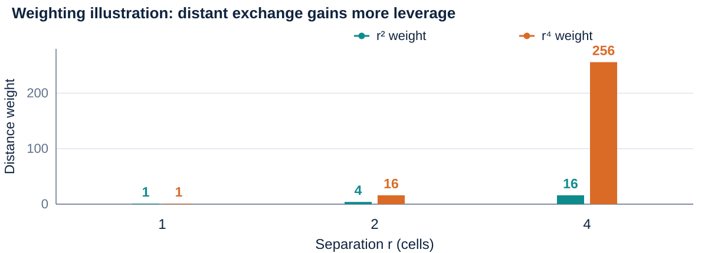
Finite conductivity alone does not fix the accuracy of a local gradient expansion.
A conditional tail example illustrates the distinction.
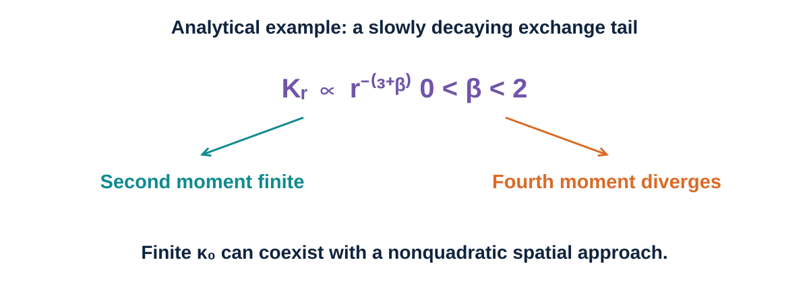
This is an analytical possibility, not a measured silicon exponent.
Both quantities come from the same saved microscopic exchange kernel.
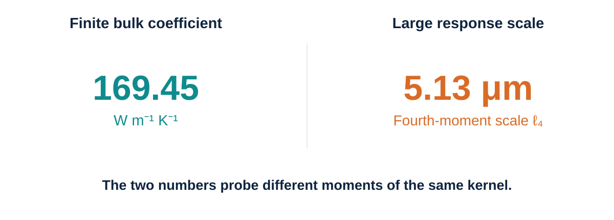
The conductivity and the spatial response scale are different properties.
Fourteen lengths now extend the conductance and resistance curves to 1.5 μm.
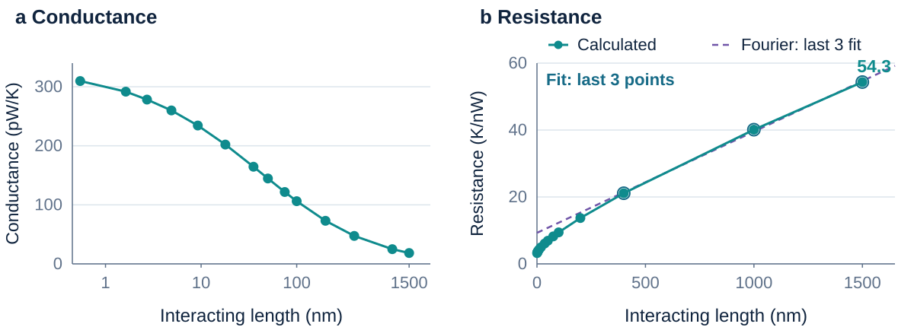
At 100 nm, resistance is 23.5% below the last-three-point fit.
At 1 μm, all contacted estimates remain below their own periodic coefficient.
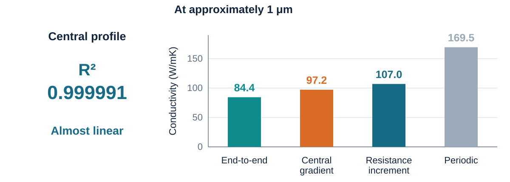
Profile shape, contact effects and bulk convergence require separate tests.
The 1 μm conductance is 17.46% below the prediction frozen at 400 nm.
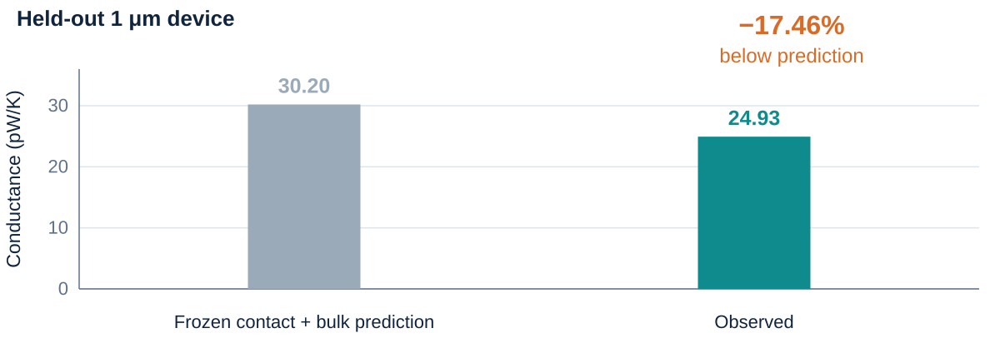
The predeclared 1% prediction tolerance fails without refitting.
The 1–1.5 μm interior interval gives a scaling exponent of 0.20.
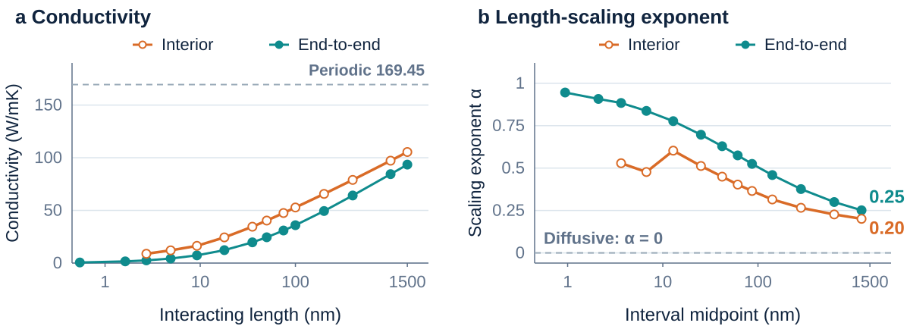
From 1 to 1.5 μm, interior conductivity rises from 97.2 to 105.4 W/mK; α_int ≈ 0.20.
The 0.25 THz sample carries 21.8% of the second moment but 93.0% of the fourth.
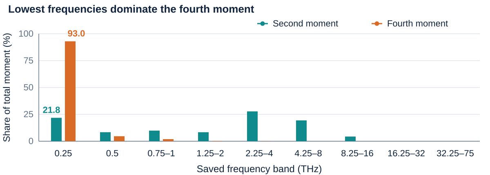
The spatial correction is much more infrared-sensitive than conductivity itself.
One transverse sector carries about 99.95% of the fourth moment in the saved model.
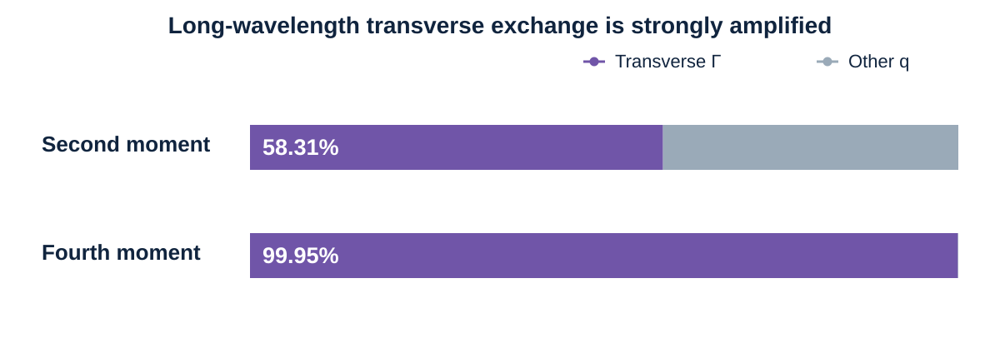
A bulk coefficient and its long-range correction need different refinement tests.
The moment estimate gives a sufficient 5% wavelength of about 144 μm.
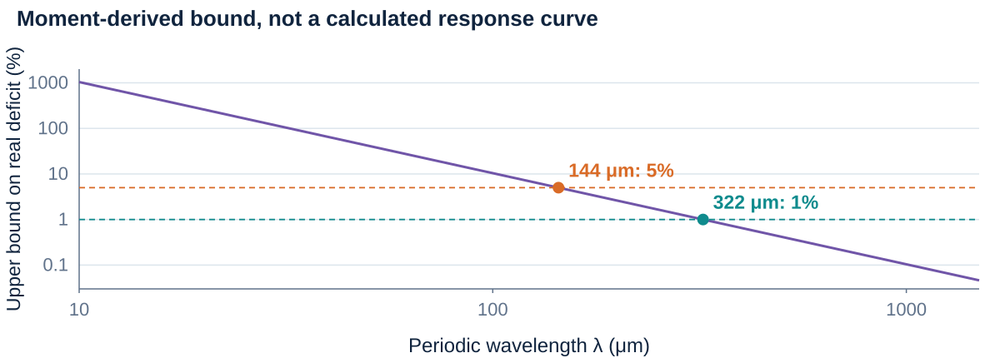
These are sufficient wavelengths, not observed crossover lengths.
With the native 8 × 8 reference fixed, bulk and short-current sensitivities differ.
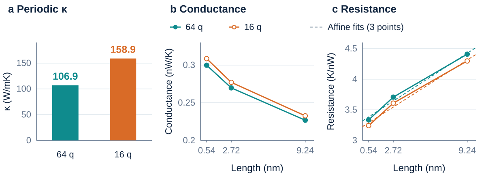
Bulk changes by 48.7%; the short conductances change by only 2.6–2.9%.
The moment prediction is qualified; its direct silicon response test is not.
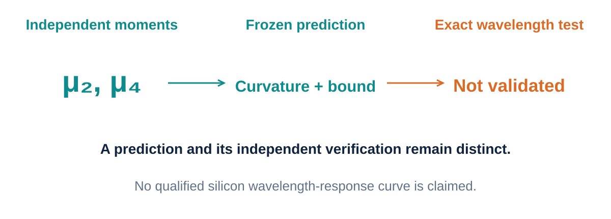
No validated silicon curvature or wavelength-locality threshold is claimed.
The saved silicon model links a finite coefficient to long-ranged spatial corrections.
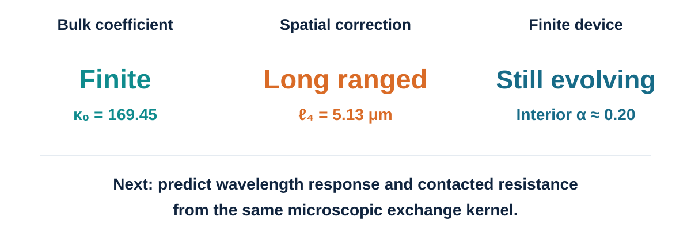
The next decisive test is one exchange kernel predicting both boundary problems without fitting.